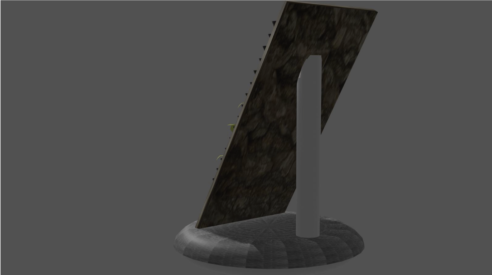
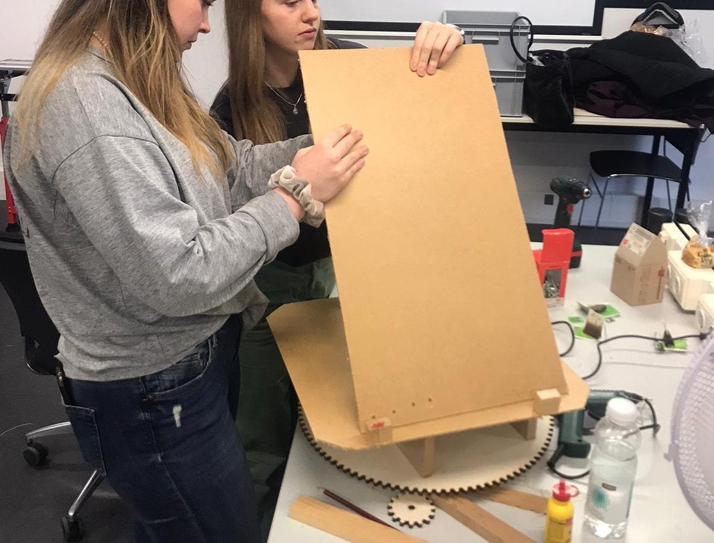
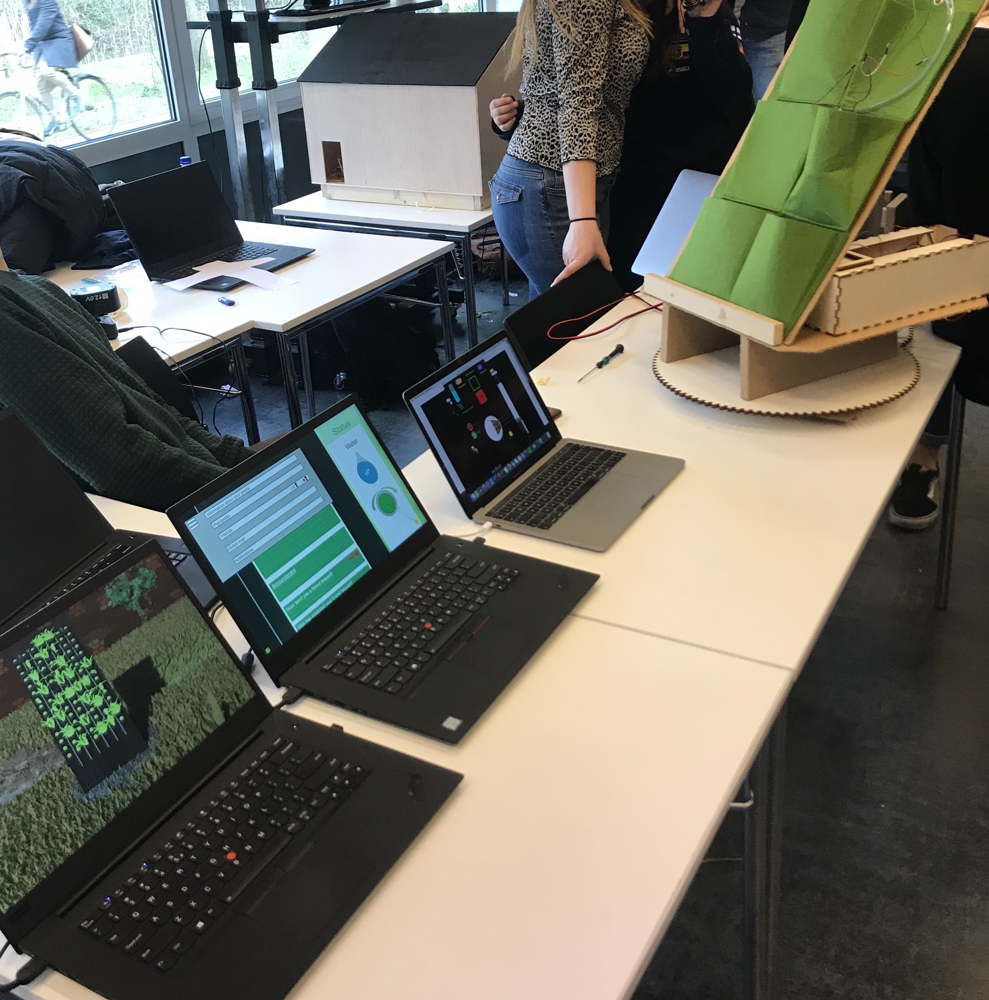
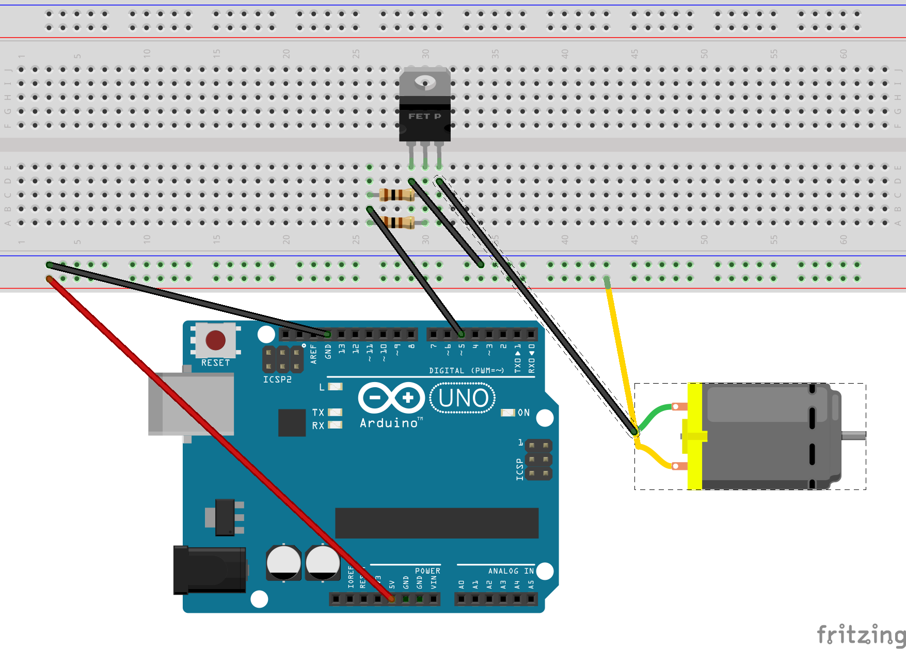
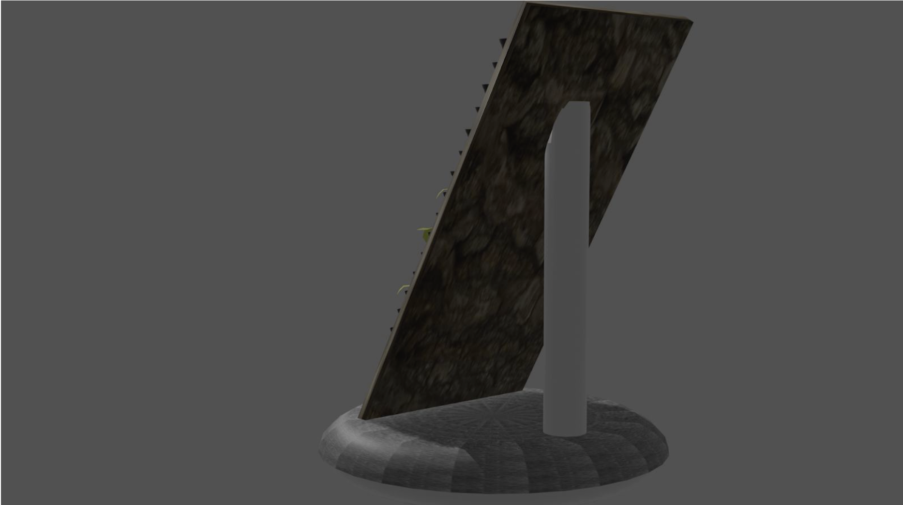
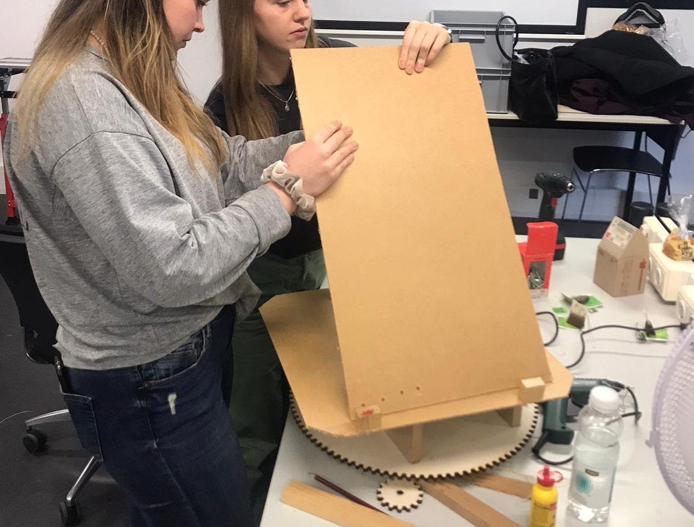
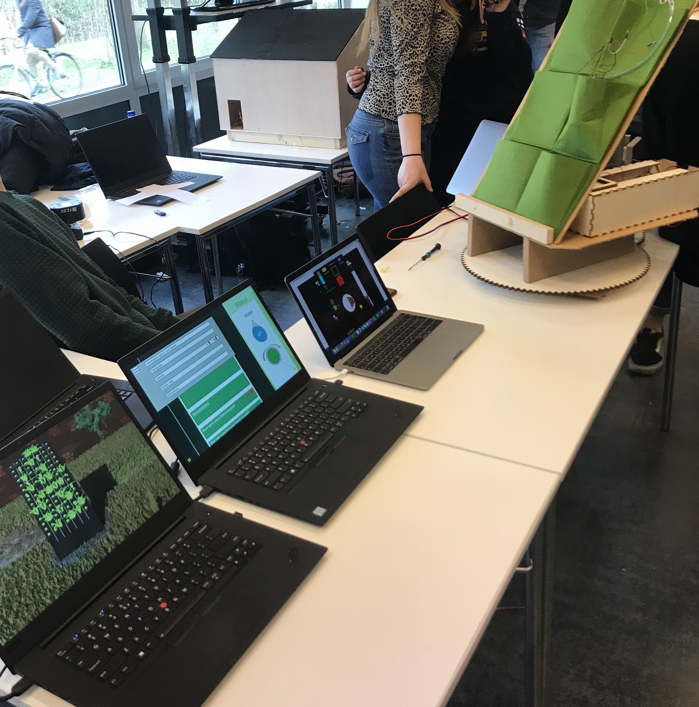
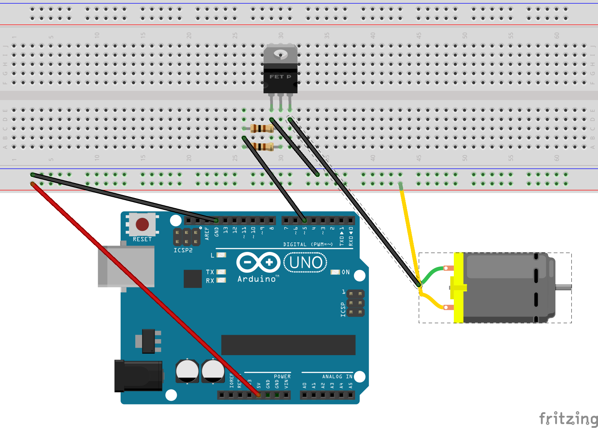

Inclusive Sports Instruction
Exploring the Use of Alternative Media to Facilitate the Instruction of Motor Movement for Special Athletes.
 







An athletics case study – Bachelor Thesis
Challenge
While interactive technologies are increasingly present in mainstream sports training, athletes with intellectual disabilities are often overlooked in their design. These athletes face unique challenges such as language comprehension difficulties, memory deficits, short attention spans, impulsive behavior, and/or hearing impairments. Traditional verbal instruction methods often fail to engage them or effectively communicate motor movement exercises, which limits their participation and progress.
“It is difficult for people with Autism Spectrum Disorder to get instruction during physical activity which relies on verbal communication and social interaction.”

Bittner, et al.
Physiology & Behavior, vol. 177
Solution
This thesis explores how alternative media can enhance instructional communication for special
athletes. The outcome is a prototype: an
add-on instruction system for athletics equipment
that uses non-verbal cues to guide athletes with intellectual disabilities through exercises. The
system was designed to improve clarity, reduce reliance on verbal explanations, and boost engagement.
My role & tools
This project followed the Creative Technology Design Process, encompassing ideation, specification, realization, and evaluation. I was responsible for:
- Conducting literature research and user interviews
- Observing training sessions to identify key user needs
- Designing and prototyping the system
- Running user tests with the target group
- Analyzing results and reflecting on improvements
Tools used included qualitative research methods, rapid prototyping techniques, and basic interaction design tools.
The process:
1. Research & Discovery
Literature reviews, trainer interviews, and field observations highlighted key cognitive and sensory challenges faced by the athletes.
2. Ideation & Specification
Identified non-verbal communication strategies and translated them into functional and non-functional system requirements.
3. Prototyping
Developed an add-on instructional system using visual and/or auditory cues to support equipment-based training.
4. Evaluation
Conducted three rounds of user testing with children. The prototype led to:
- Fewer errors during exercises
- Faster task completion
- Reduced need for verbal instruction
- Higher overall engagement
Feedback from both athletes and the trainer was very positive, indicating the system's potential.
Outcome & reflection
The project achieved its goal of improving understanding and engagement during training sessions. It demonstrates the promise of inclusive interactive design in sports contexts. While the results are encouraging, further testing with a broader participant base and varied equipment is recommended to validate generalizability.
Project overview
- Project type Bachelor Thesis (Academic Research Project)
- Duration 6 months (Spring - Summer 2022)
- Tools Literature review, user interviews, field observations, low-fidelity prototyping, usability testing
- Category UX design and Product design
- See thesis